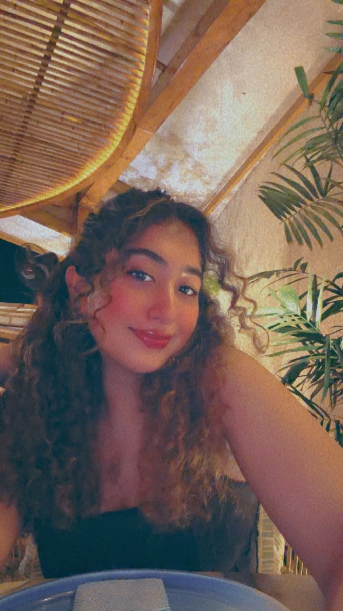
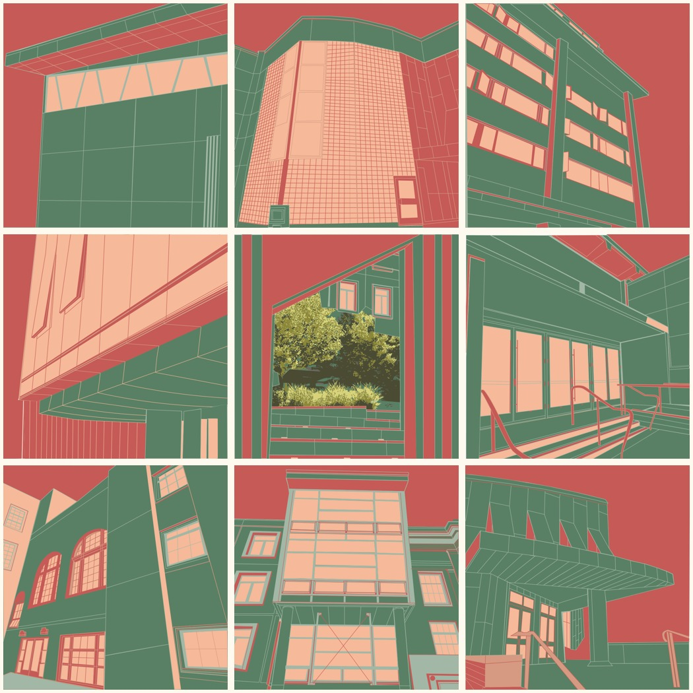

PROJECT 01
Neeral’s Feed
Bows, cafés & campus days.
I created Neeral’s Feed as a personal website that brings together moments from my life. A soft pink visual identity introduces a feed of everyday experiences.
Explore the project →I’m from Indore, India, and now study in San Francisco. My work brings together the things I’m learning in UX/UI, the everyday places I love, and stories that feel personal to me.

Four projects, four different starting points.
Click through for the process and finished work.
Bows, cafés & campus days.
I created Neeral’s Feed as a personal website that brings together moments from my life. A soft pink visual identity introduces a feed of everyday experiences.
Explore the project →A little pause in an endless feed.
I designed Pausepoint to bring a moment of awareness into endless scrolling. A familiar social feed leads to a checkpoint that asks the viewer to decide whether to continue or quit.
Explore the project →A local guide, made for fellow students.
I created a brunch guide to help USF students explore places near campus. Photographs, personal reviews, and clear navigation bring the recommendations together.
Explore the project →Making room for expression.
I developed UNMUTED as a class event concept exploring anxiety through art. The visual identity and website introduce the idea, its activities, and support resources.
Explore the project →Research notes, color experiments, characters, and photography.

Exploring product discovery through usability testing, proto-personas, journey mapping, and heuristic evaluation.
Explore the research →
USF campus architecture reduced to vector shapes and a shared five-color palette across nine compositions.
View the series →
A Ganesha-inspired character on a lotus, exploring cultural identity, warmth, and inclusivity in Illustrator.
View the illustration →
A photographic triptych about overthinking, using motion blur, color, and typography to tell an emotional story.
View the posters →I’m Neeral Wadhwani, a Business Analytics major with a UX/UI minor at the University of San Francisco, graduating in May 2027.
I’ve worked on websites, research exercises, interactive prototypes, and illustration projects. I like having both sides of my degree in the mix: understanding the information and finding a clear, creative way to present it.
Outside the studio, I’ve managed social media for USF’s College of Arts and Sciences, tutor students, and serve as a Resident Advisor. Listening, adapting, and communicating clearly are part of my everyday work.
Tools I work withI’m interested in early-career UX/UI and product design opportunities.
nwadhwani@dons.usfca.edu ↗LinkedIn ↗